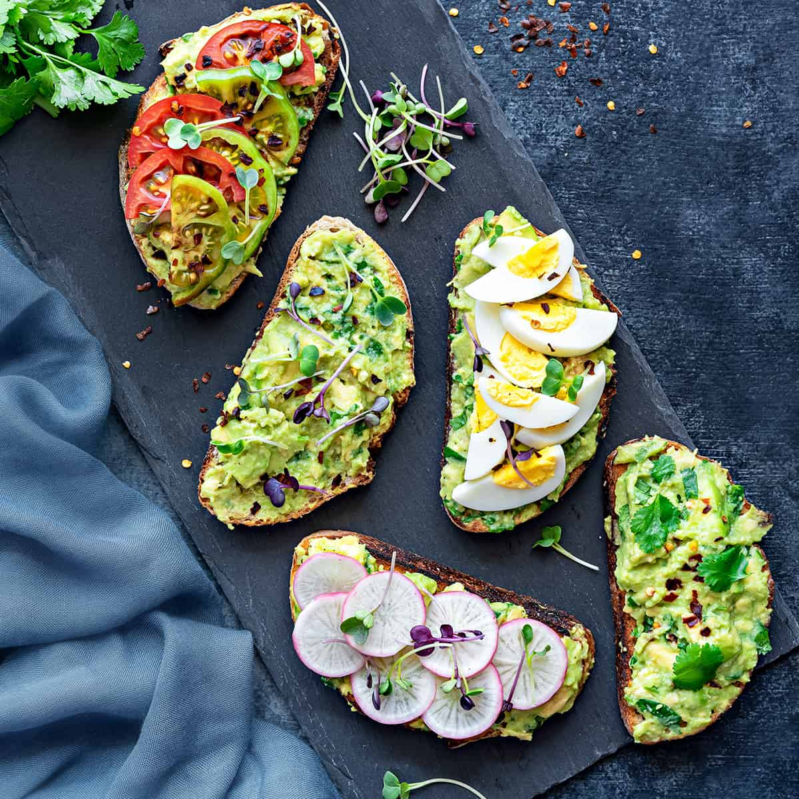

Presenting to you......Toast..... made with avocados
We’re going back to basics this summer, so let’s talk about avocado toast! Creamy avocado spread onto well-toasted bread is one of my favorite quick meals. Actually, it’s one of my favorite meals in general. It’s so delicious, I’d call it one of life’s simplest pleasures.
Lets start with the process shall we, all you'll need to do is...
Ratatouille could learn a thing or two from this recipe.